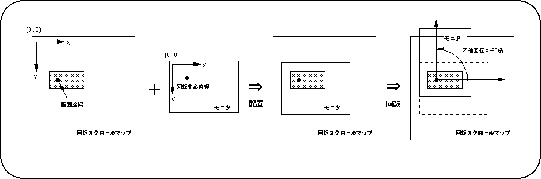
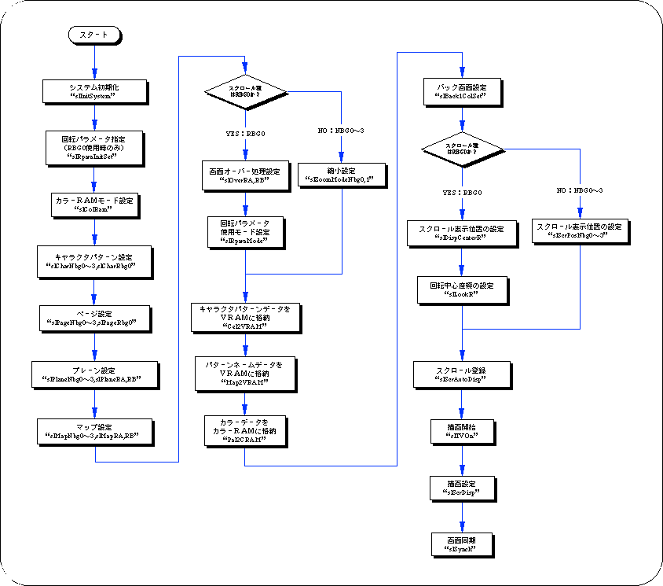

★SGL User's Manual
★PROGRAMMER'S TUTORIAL
★SGL User's Manual
★PROGRAMMER'S TUTORIAL
● RGBモードカラーサンプル ● #define CD_Blank (0<<10) | (0<<5) | (0) | RGB_Flag #define CD_DarkRed (0<<10) | (0<<5) | (8) | RGB_Flag #define CD_DarkGreen (0<<10) | (8<<5) | (0) | RGB_Flag : : #define CD_Purple (31<<10) | (0<<5) | (31) | RGB_Flag #define CD_Magenta (31<<10) | (31<<5) | (0) | RGB_Flag #define CD_White (31<<10) | (31<<5) | (31) | RGB_Flag
図8-16 表示位置と回転中心位置の関係

登録するスクロール画 NBG0 NBG1 NBG2 NBG3 RBG0 代 入 値 NBG0ON NBG1ON NBG2ON NBG3ON RBG0ON
● 複数のスクロール面登録●Uint16 slScrAutoDisp(NBG0ON|NBG1ON|RBG0ON); ↑ ↑ ↑ ｜ ｜ RBG0登録 ｜ NBG1登録 NBG0登録
(｜ = or演算子)
| NBG0 | NBG1 | NBG2 | NBG3 | RBG0 | ||||||
|---|---|---|---|---|---|---|---|---|---|---|
| ON | OFF | ON | OFF | ON | OFF | ON | OFF | ON | OFF | |
代 入 値 | NBG0ON | NBG0OFF | NBG1ON | NBG1OFF | NBG2ON | NBG2OFF | NBG3ON | NBG3OFF | RBG0ON | RBG0OFF |
フロー8-2 スクロール描画までの流れ

★SGL User's Manual
★PROGRAMMER'S TUTORIAL